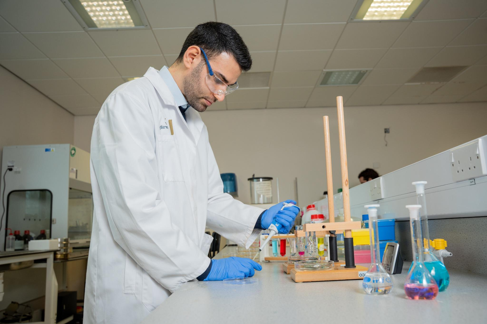

Sajjad Barzegar
Focuses on research as the creation of new knowledge.

Focuses on research as the creation of new knowledge.

I am a PhD student at the School of Pharmacy and Pharmaceutical Sciences at Ulster University, where my research focuses on advanced drug delivery systems and biomaterials.
I hold both a Master of Science and a Bachelor of Science in Chemical Engineering from Shiraz University, Iran. During my academic studies, I developed a strong foundation in transport phenomena, thermodynamics, and materials science, graduating with high distinction (M.Sc. GPA: 18.50/20, B.Sc. GPA: 18.16/20).
My academic journey has been driven by a deep interest in applying engineering principles to biomedical challenges, particularly in the development of polymeric micro/nanomaterials and targeted drug delivery systems for treating diseases such as cancer and infections.
Phone: +44 7881 143576
28 Union Street, Coleraine,UKbarzegar.sjd@gmail.com